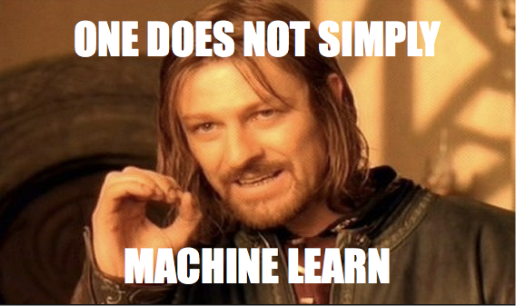

Stages to Machine Learning

If one does not simply… “machine learn”… what does one do to cover all the bases and make sure that the process is complete and value-producing?
Here 10 high level stages to check off as you take on a machine learning task.
Business Metric
Before you do anything with machine learning, you absolutely must have a good undertanding of which business metric we’re hoping to improve as a result of employing machine learning.
Otherwise, how will you know if it “worked”?
Talk with management. Find out their goals. Hear the story and understand what they’re wanting to see improvement in, in terms of the business.
Try not to get a high level answer like, “We want to see an increase in sales.” Okay. Well. Don’t we all?
The more specific and defined management can get with their business metric of choice, the better. “We want to see a 10% increase in sales for [some product] among customers to whom we advertise directly regarding an exclusive discount on [that product].” It’s much more specific, measurable, targeted, and well-defined than the first “goal”, isn’t it? With this statement, we could work toward building a machine learning model to classify customers who are more likely to respond positively to our advertising. At the end, we can look back to the customers we predicted on, and see if a difference 1) exists and 2) can reasonably be attributed to the work of our machine learning model.
Blend
More data. That always seems to be the answer to our predictive woes, doesn’t it?
Two data sets augmenting one another lend more knowledge for machine learning algorithms to latch on to and figure out patterns within.
You could use the word “integrate” here if you want. The point is that you’re gathering data from multiple sources to help give the most complete picture of what you’re analyzing and predicting.
Explore
To make sense of the data you’ve got, especially if you didn’t generate it in the first place, you need an exploration process built in to your machine learning pipeline.
Profile your data – find out the good parts and the bad (dirty) parts, such as missing values, inconsistent labels, etc.
Compute summary statistics.
Visualize your data set by plotting the variables against one another to gain intuition about how the variables relate.
Use multiple kinds of visualizations to get a good feel for the “shape” of your data.
Clean
Data is messy (pretty much always).
Somewhere in your machine learning pipeline, you’ve got to have a cleaning step where you fill in missing values, correct misspellings, etc.
Do the work to clean your data so that the predictions generated by machine learning are optimal.
Transform
Data is in constant need of transformation, especially when it comes from multiple sources.
In order to get things consistent and clean, you often need to transform the values of your variables so that they’re in conformity with one another.
For example, suppose that two data sets contain a column named “State”. In the first, the values look like this:
- OK
- NY
- FL
In the second, the values look like this:
- Oklahoma
- New York
- Florida
For conformity and consistency’s sake, you need to pick a format (either the abbreviation, or the name) and transform the other into that standardized format.
Another example: Suppose that two data sets contain weight measurements. In the first, the units of measure are in pounds, and in the second, the units are in kilograms. Again, a transformation is needed: Pick the standard unit you want to measure things in across your data sets, and transform the one(s) that aren’t in conformity to that standard.
Engineer Features
Akin to transformation, there are times when additional features (predictor variables, columns) can be created, or engineered.
At times, you’ll use the existing features in the data set to make a calculation – the calculation can be added to the overall data set as a new feature for the machine learning algorithm(s) you choose.
Other times, you may bring in a supplemental data set, blend it, explore it, clean it, transform it, and then use its variables as new engineered features.
Select Features
Not all features are created equal.
Meaningless features should be dropped before moving on to the final stages of machine learning. “Meaningless” is relative, but in general, anything that doesn’t seem to help with informing or influencing the outcome to your predictive problem should be left out.
You can (and should) experiment with this, of course. But at some point, you’ve got to pick the features that matter.
Train Model
To “machine learn”, one needs to select a machine learning algorithm that is reasonable for the predictive problem at hand.
Once a machine learning algorithm is chosen, the selected features of the cleaned, transformed data sets are used to train a model.
When this stage is done, you have a model (usually a mathematical equation or function that can take inputs, follow the patterns discovered as the algorithm trained on the data, and produce ann output in the end).
Evaluate
How well does the trained model perform? To know, you need to evaluate the outputs.
Your metric for evaluation varies depending on the predictive problem you’ve got on your hands. You may be interested in maximizing Classification
Regression
Deploy
A machine learning model doesn’t do much good until it’s deployed, does it?
Get it out there, and let it start creating value by proiding actionable insight.
Verify
It starts and ends with your business…your organizational metrics that you or your company’s leadership are trying to improve.
Once the model is producing predictions and leaders are taking action on those predictions, you need to check back to that original business metric that you defined in stage zero, to see if the model is working or not.
If it is, great! If it’s not, shut it down!
In both cases, the final stage is:
Rinse and repeat.
Do it all again, either for the purpose of improving your existing model, or building an entirely new one.
comments powered by Disqus